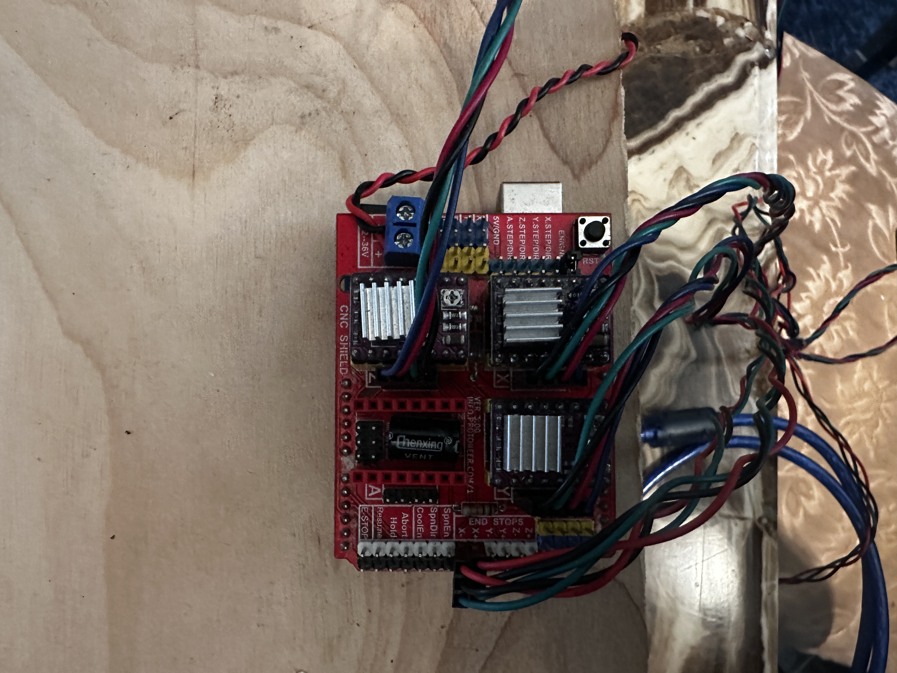
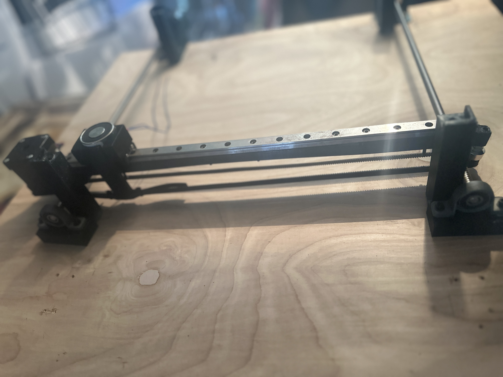
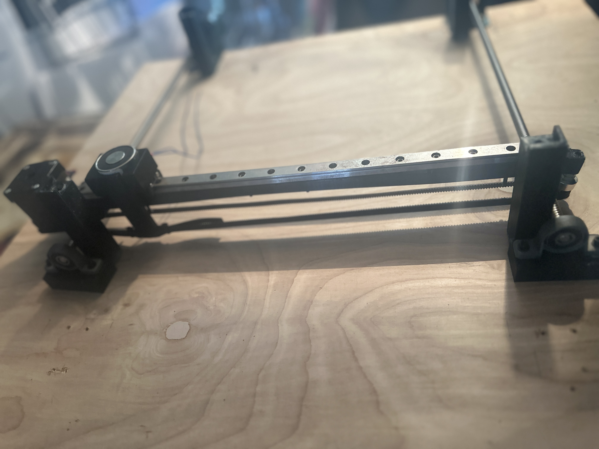

I'm John.
A Maker, Programmer, Engineer
Father, Artist & Overall Student of Life.

I am currently a student at Delaware County Community College and graduate in May 2022 with my Associates in Engineering. Aquiring my degree in engineering and supporting my son are my main focus in life. My dream career would be working in the A.I./Machine Learning field creating "things" that will improve on the quality of life of society as a whole, not just do tasks that make our everyday lives easier. I have interests in anything RC mostly planes and submarines as this allows me to create and learn on a large array of subjects from A.I. with the auto-pilot to aesthetics and the communication of the electronics. I have always loved to tinker and take things apart to figure out how things work and how they are able to do what they do, and how they can be "better" or more efficient. I am always trying to learn more and gain more knowledge on as much as I can from coding, basic circuit analysis, Machine Learning and A.I., computer security, and so much more. I also am an artist and love to draw mostly with graphite or charcoal. I also am learning airbrushing at the moment mostly doing body painting but would like to expand on that and would like to get into painting with acrylics. I have recently gotten into gardening mostly vegetables and as with everything else cannot help myself but to add electronics to my garden. I am researching starting an aquaponics set up in my home...atleast to start. Plus I love coffee and it is even better in the outdoors.

I have knowledge in Python, C++, and web design all of which started self taught but I have also taken C++ classes as part of my assocaite's degree. I have also an informal art background that comes from my family and has been a major part of life. Design and beauty is something that has the ability to bring people in while a strong development and decisive implementation keeps people interested and keeps people coming back for the comingling of beauty and seemless operation.

I pride myself on my ability to think outside the box, to come at problems from directions that have not been thought of yet. Thinking critically and outside of the box is how progress is made and my life experiences have given me the focus and thought process to accomplish both and I bring this with me on every project I work on.
This projects is still in the process of being worked on. I decided to do this project because I
love playing chess but am not the biggest fan of playing online 
or on a computer screen. So after doing a bit of research and planning I came up with the A.I.
Chessboard. The chess A.I will most likely be powered by Stockfish which is
an open-source chess engine. At the moment I believe there will be two boards doing the work,
I am using an Uno with the help of this CNC shield V3 which is pictured on the left.
These will do the heavy lifting as far as powering the stepper motors, limit switches
and toggling the power to the electromagnet when needed.
I am planning the brains of the operation,
which will be where stockfish is uploaded, to be a Raspberry Pi 4 which will tell the arduino
what to do and when to do it. For the playing surface I am using a generic glass chessboard so that
the player can have a view of the inner-workings of the board and see all the movement. This will also
allow LEDs to be added
underneath the glass squares and play with a glowing board if desired, I have yet to test this idea though.
Each chess piece will have a small magnet at the base to allow for the hall effect sensors to sense the pieces
and their positions as the move around the board. This is essentially the eyes of the A.I. if the Rpi is the brain
 and gives the Rpi the ability to "see" each piece. This will be possible because each square of the board will have
its own hall-effect sensor all soldered together like a grid so that I can pinpoint each piece similiar to battleship.
The electromagnet mentioned above is mounted on a 3D printed gantry that itself is mounted on a linear rail. On each side
there are two screw rods powered each by a stepper motor. The gantry slides on the linear rail by its
own stepper motor with a pulley and belt system to move the electromagnet
precisely to each square. When the magnet is at its set position it will activate and move the pieces.
I have plans already to make this a better design as after starting building I found out about a belt and pulley setup that

will allow me to do the same kind of movements quicker and with one less stepper motor. I have designed many of
the parts I needed on fusion 360 and using my 3D printer been
able to create custom parts for the project. A few examples would be the board pillars which are
at each corner of the board and allows the board to sit snuggly
in place and keeping a clean view of all the workings of the chessboard and clearance for the
movement of the gantry. Also, I created custom levelers for the screw rods
as well as the carriage for the electromagnet which again allows for just a snug fit with no
adhesive or screws needed and a place for the wire to neatly escape
the carrige and attach to the arduino shield. As I think the pictures show this project is a work in progress but
is the main project I work on. I also would just like to say that though I may have thought about this independently there are
chess boards similiar to this concept available commercially.
and gives the Rpi the ability to "see" each piece. This will be possible because each square of the board will have
its own hall-effect sensor all soldered together like a grid so that I can pinpoint each piece similiar to battleship.
The electromagnet mentioned above is mounted on a 3D printed gantry that itself is mounted on a linear rail. On each side
there are two screw rods powered each by a stepper motor. The gantry slides on the linear rail by its
own stepper motor with a pulley and belt system to move the electromagnet
precisely to each square. When the magnet is at its set position it will activate and move the pieces.
I have plans already to make this a better design as after starting building I found out about a belt and pulley setup that

will allow me to do the same kind of movements quicker and with one less stepper motor. I have designed many of
the parts I needed on fusion 360 and using my 3D printer been
able to create custom parts for the project. A few examples would be the board pillars which are
at each corner of the board and allows the board to sit snuggly
in place and keeping a clean view of all the workings of the chessboard and clearance for the
movement of the gantry. Also, I created custom levelers for the screw rods
as well as the carriage for the electromagnet which again allows for just a snug fit with no
adhesive or screws needed and a place for the wire to neatly escape
the carrige and attach to the arduino shield. As I think the pictures show this project is a work in progress but
is the main project I work on. I also would just like to say that though I may have thought about this independently there are
chess boards similiar to this concept available commercially.
My Pi-Garden is an ongoing project that I am always updating and making more efficient or
adding functionality to. I have an indoor garden and it can take alot of work and attention
to get the plants to grow and prosper. With modern life it can be hard to find the time to make
sure all the love and attention is given to all the plants. My first simple iteration was with
an arduino it measured soil moisture, temperature and humidity, and watered the plants with a small
water pump some tubing and 3D printed watering disks that would spike into the ground and encircle the
stem of the plants. I had realized I had an
issue though during the setup and initial run of the water pump because the plants were couple feet above the pump
and that I wanted the water tank to be closed off from outside air and contaminants as the water was pumped up and out
a vacumn would be created in the tank and stop the pump from working plus putting significant stress on the motor and
componets of the pump because of back pressure and it fighting the vacumn. My solution to this was to create a dynamic
tank that would change its pressure as the water volume changed. I accomplished this by 3D printing two halves of a cylinder the
bottom would be the water tank but the top half of the cylinder is slightly larger to create an air tight seal when top half is placed
on bottom and acts as the dynamic part of the system.
I had realized I had an
issue though during the setup and initial run of the water pump because the plants were couple feet above the pump
and that I wanted the water tank to be closed off from outside air and contaminants as the water was pumped up and out
a vacumn would be created in the tank and stop the pump from working plus putting significant stress on the motor and
componets of the pump because of back pressure and it fighting the vacumn. My solution to this was to create a dynamic
tank that would change its pressure as the water volume changed. I accomplished this by 3D printing two halves of a cylinder the
bottom would be the water tank but the top half of the cylinder is slightly larger to create an air tight seal when top half is placed
on bottom and acts as the dynamic part of the system. The way it works is simple when the tank is filled with water it sits like in the picture of the stacked halves but
when the water starts to be pumped out of tank and the vacumn is created instead of fighting the pump
it pulls the top cylinder down creating a stable pressure again this also acts as a crude way of knowing when to refill the water.
As can be seen in the bottom picture and from the other pictures this is a motor installed at the top of the tank that goes through
the center of the top half and is attached to a shaft with a mixer I designed that is programmed to turn on shortly before the pump
so it can mix up any nutrients/fetilizer that has settled at the bottom of the tank. I used an old cheap drone motor that was geared
to power the mixer as it takes a significant amount of force to spin the shaft against the drag of the water as by design its created
to not be streamline to completely mix solution. This ability to always keep constant pressure allowed for water to always remain in
the pump after being turned off which infact helped push the water up to the garden which was about 1.5ft - 2ft above the pump and tank.
The new iteration will have the same functionality as the arduino based but the Rpi-Garden will give the benefits of wifi and BLE capability
allowing access to data and control of system anywhere with the setup of a web server controller. In the first iteration the nutrients was added
and measured manually which sat in tank
The way it works is simple when the tank is filled with water it sits like in the picture of the stacked halves but
when the water starts to be pumped out of tank and the vacumn is created instead of fighting the pump
it pulls the top cylinder down creating a stable pressure again this also acts as a crude way of knowing when to refill the water.
As can be seen in the bottom picture and from the other pictures this is a motor installed at the top of the tank that goes through
the center of the top half and is attached to a shaft with a mixer I designed that is programmed to turn on shortly before the pump
so it can mix up any nutrients/fetilizer that has settled at the bottom of the tank. I used an old cheap drone motor that was geared
to power the mixer as it takes a significant amount of force to spin the shaft against the drag of the water as by design its created
to not be streamline to completely mix solution. This ability to always keep constant pressure allowed for water to always remain in
the pump after being turned off which infact helped push the water up to the garden which was about 1.5ft - 2ft above the pump and tank.
The new iteration will have the same functionality as the arduino based but the Rpi-Garden will give the benefits of wifi and BLE capability
allowing access to data and control of system anywhere with the setup of a web server controller. In the first iteration the nutrients was added
and measured manually which sat in tank  until it was needed which could be days and sometimes we do not want the nutrients but pH neutral water which would mean wasting the nutrient
solution that had been mixed. With the Pi-Garden plan to add a 3 part nutrient system using peristaltic pumps to added exact quantites when needed
instead of having it premixed and possibly build up bacteria that could harm the plants instead of helping with this I also plan a monitoring
system for the water pH. The Rpi gives an added ability of a "brain" so I can code a program to monitor temp. and humididty as well as
control intake and outtake fans connected to the system to have complete control of enviorment inside the grow space by simply
controlling the fans individual speeds to bring more or less fresh air into the space. The Garduino based system was all done on a breadboard as I
said with a Nano as a proof of concept the 2nd iteration I plan to create a circuit board to assist with running everything along with the Pi.
As I start building the 2nd iteration with the Rpi and put it into use I will post pictures of the build and componets I use.
until it was needed which could be days and sometimes we do not want the nutrients but pH neutral water which would mean wasting the nutrient
solution that had been mixed. With the Pi-Garden plan to add a 3 part nutrient system using peristaltic pumps to added exact quantites when needed
instead of having it premixed and possibly build up bacteria that could harm the plants instead of helping with this I also plan a monitoring
system for the water pH. The Rpi gives an added ability of a "brain" so I can code a program to monitor temp. and humididty as well as
control intake and outtake fans connected to the system to have complete control of enviorment inside the grow space by simply
controlling the fans individual speeds to bring more or less fresh air into the space. The Garduino based system was all done on a breadboard as I
said with a Nano as a proof of concept the 2nd iteration I plan to create a circuit board to assist with running everything along with the Pi.
As I start building the 2nd iteration with the Rpi and put it into use I will post pictures of the build and componets I use.
This is my most recent project and I am still in the process of 3D printing the plane that the teensy will be controlling will update when finish plane build and starting with electronics. so more to come.
Check it OutAccomplishing the Impossible everyday.